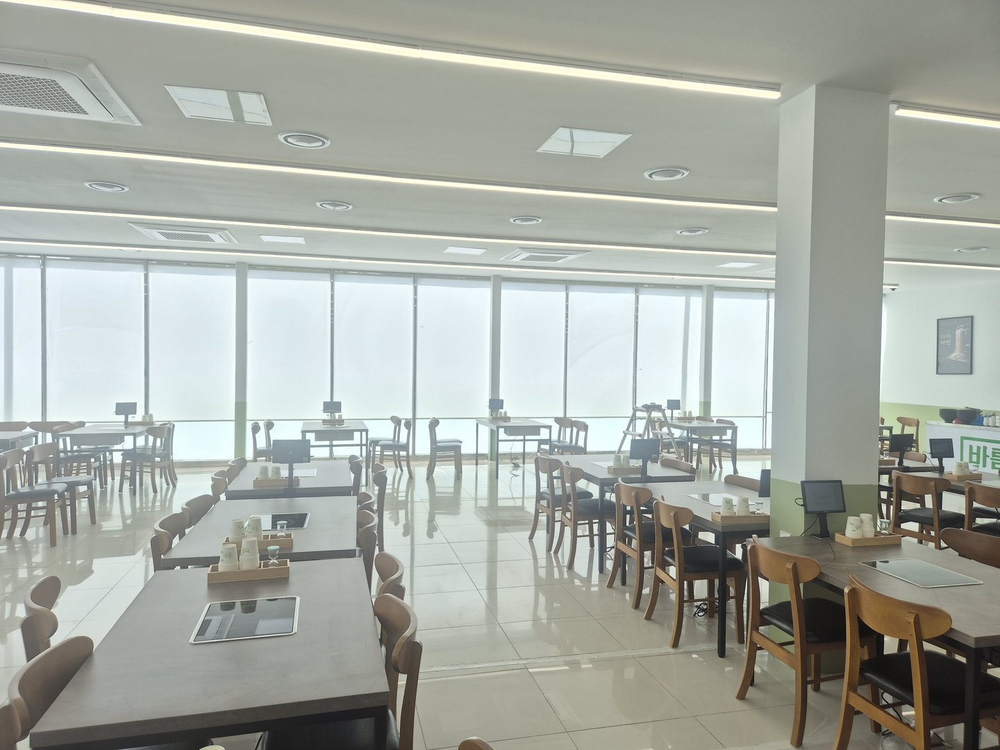
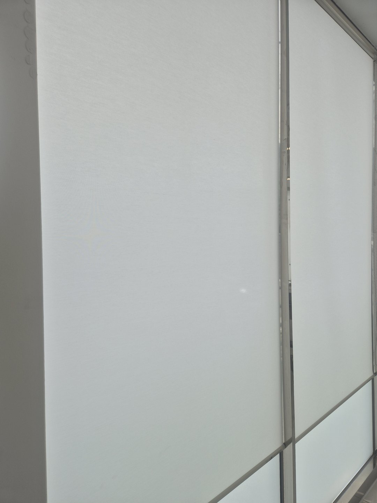
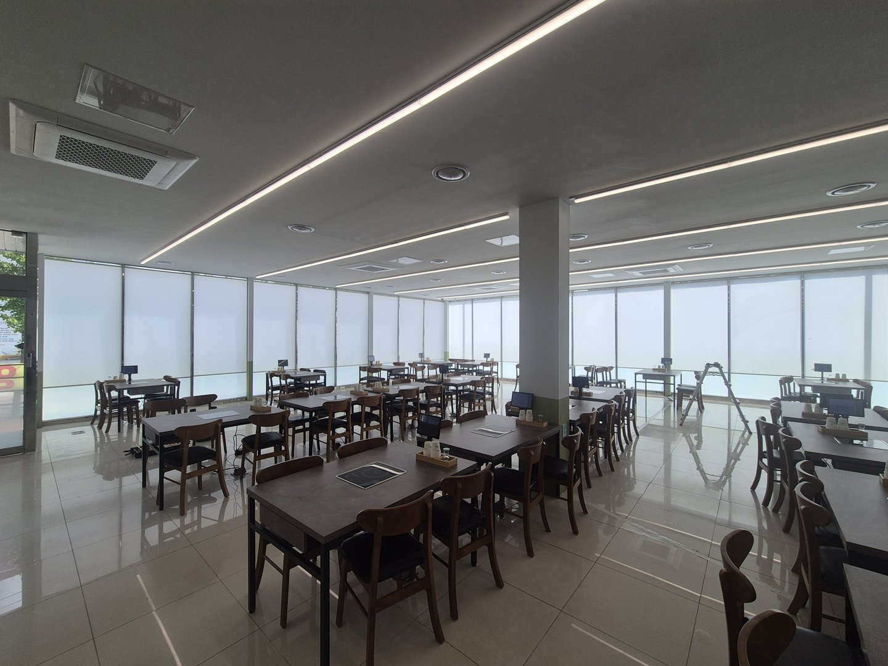
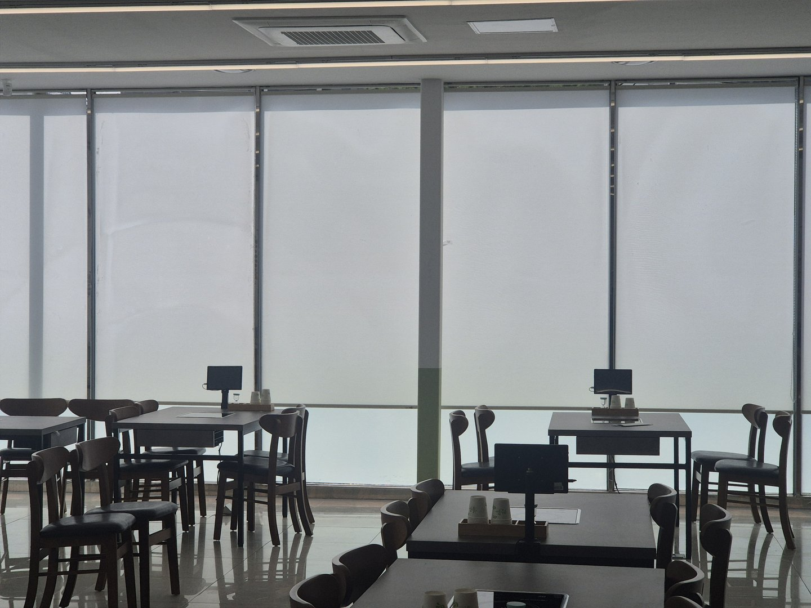
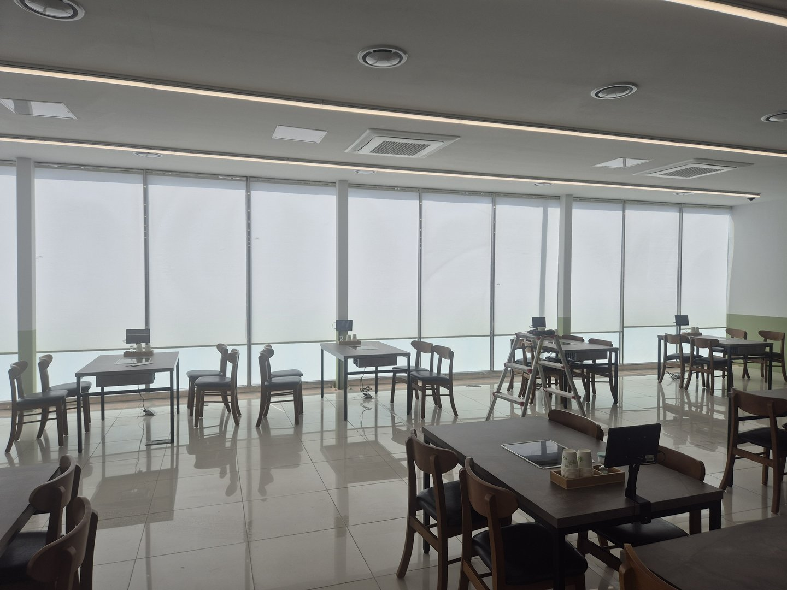
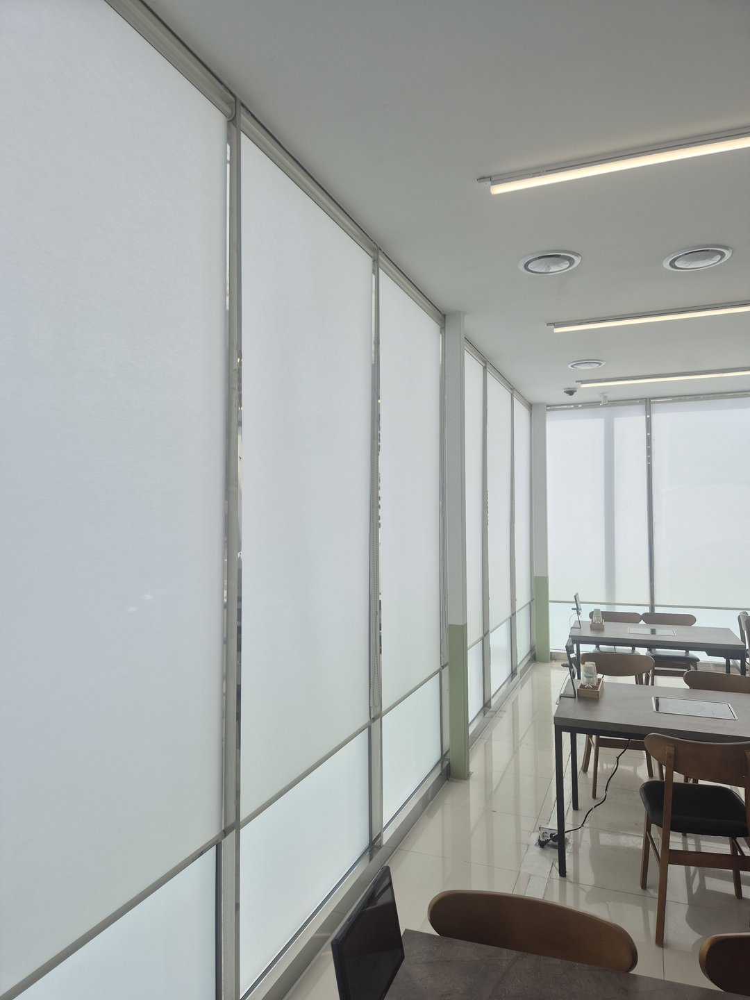
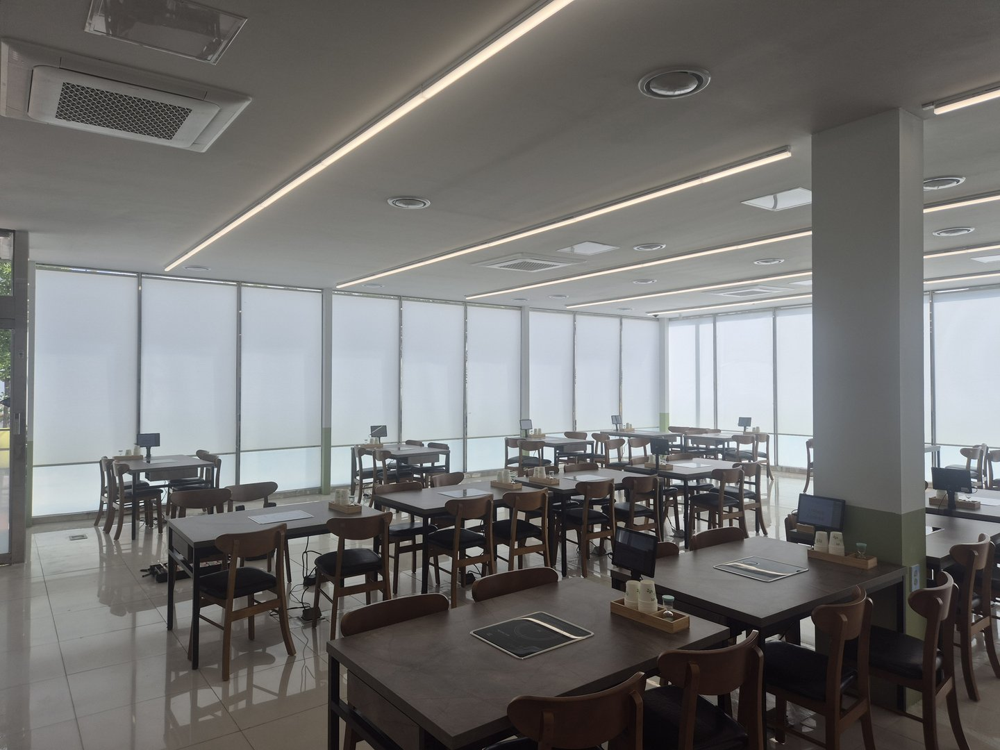

2026년 8월 13일 시공
포항 우현동 식당
화이트 방염 채광 롤스크린 시공후기

포항 우현동에 있는 상가 식당입니다. 홀이 넓고 세 면이 전부 바닥부터 천장까지 통창이었습니다. 창 아래쪽에는 반투명 유리 난간대가 둘러져 있고 그 위는 전부 투명한 유리였습니다.
시야는 시원한데 볕이 그대로 들어왔습니다. 사장님 말씀은 이랬습니다. "창가 자리는 여름에 손님을 못 앉혀요."
식당 창의 기준은 어둡게가 아니라 고르게입니다
블라인드를 다는 이유를 눈부심 때문이라고만 생각하기 쉽습니다. 그것도 맞지만 식당에서 더 크게 달라지는 건 음식이 어떻게 보이느냐입니다.
창가 자리에 해가 정면으로 들면 그 테이블만 아주 밝아집니다. 안쪽 자리는 상대적으로 어둡습니다. 같은 홀 안에서 자리마다 조건이 달라집니다.
창가 손님은 눈이 부시고 여름에는 덥습니다. 안쪽 손님은 자리가 어둡다고 느낍니다. 그리고 하나가 더 있습니다. 같은 메뉴인데 사진이 자리마다 다르게 나옵니다.
요즘은 음식을 찍어 올리는 손님이 많습니다. 직사광이 접시 한쪽만 때리면 그 부분이 하얗게 날아가고 반대쪽에는 진한 그림자가 생깁니다. 음식이 실제보다 못하게 찍힙니다. 가게 입장에서는 손해입니다.

화이트 채광 원단이 하는 일
이번에 쓴 원단은 화이트 채광 원단입니다. 빛을 막는 게 아니라 통과시키면서 흩뜨립니다.
직사광이 원단을 지나면서 방향을 잃습니다. 그러면 창 한 면 전체가 하나의 넓은 광원이 됩니다. 사진 찍을 때 조명 앞에 천을 한 겹 대는 것과 같은 원리입니다.
그림자 경계가 부드러워지고 접시 위 대비가 줄어듭니다. 어느 자리에 앉아도 조건이 비슷해집니다. 다만 원단 종류와 창 방향에 따라 체감은 달라질 수 있습니다.
알기 쉬운 기준이 하나 있습니다. 바닥 타일에 창 모양 밝은 사각형이 찍히는지 보시면 됩니다. 그 모양이 보이면 접시 위에도 같은 일이 벌어지고 있는 것입니다.

홀이 어두워지지는 않을까요
사장님이 제일 걱정하신 부분입니다. 식당이 어두우면 음식 색이 죽습니다.
그래서 암막이 아니라 채광 원단으로 잡았습니다. 내린 상태에서도 조명을 더 켤 필요가 없을 만큼 밝습니다. 밝기가 조금 줄어드는 대신 그 밝기가 홀 전체에 고르게 퍼집니다.

왜 커튼이 아니라 롤스크린이었을까요
식당은 기름과 냄새가 도는 공간입니다.
커튼은 주름을 잡기 때문에 펼친 원단 면적이 창보다 훨씬 넓습니다. 보통 창 폭의 두 배 안팎이 들어갑니다. 그 넓은 면적이 냄새를 다 받습니다. 접힌 안쪽까지 배어서 세탁을 해야 빠집니다. 홀이 넓으면 그 세탁이 일이 됩니다.
롤스크린은 원단이 평평하게 한 겹으로 내려옵니다. 같은 창을 가려도 표면적이 작습니다. 냄새와 기름이 덜 붙고, 마른 걸레로 눌러 닦기가 쉽고, 감아 올리면 창 위에 얇게 접힙니다. 홀이 넓을수록 이 차이가 커집니다.

아래 난간대는 왜 가리지 않았을까요
롤스크린을 창 끝까지 내리지 않았습니다. 아래 반투명 유리 난간대 위에서 멈추도록 길이를 잡았습니다.
난간대 아래는 어차피 밖에서 안이 안 보이는 부분이라 굳이 한 겹 더 덮을 이유가 없습니다. 그보다 중요한 건 밖을 지나는 사람 눈높이에 가게 안이 조금 비쳐야 한다는 점입니다.
처음 가는 식당 앞에서 사람들은 잠깐 안을 봅니다. 자리가 있는지, 사람이 있는지, 분위기가 어떤지를 봅니다. 안이 아예 안 보이면 그 확인을 못 합니다. 문을 열어야 알 수 있는 가게는 들어가기가 망설여집니다.

원단은 방염 성능이 있는 것으로 잡았습니다
식당처럼 사람이 많이 모이는 영업장은 실내에 쓰는 천에 방염 성능을 요구하는 경우가 있습니다.
건물 용도와 규모에 따라 기준이 달라서 여기서 단정해 말씀드리기는 어렵습니다. 다만 나중에 확인 요청을 받을 수 있는 부분이라 처음부터 방염 원단으로 잡았습니다. 필요하시면 관련 서류도 함께 챙겨드립니다.
창이 세 면인데 어떻게 나눴을까요
홀 창이 세 면을 둘러싸고 중간에 기둥이 있었습니다. 한 짝으로 길게 뽑으면 원단이 무거워져 여닫기가 힘들어지고, 봉도 길어져 가운데가 처집니다.
그래서 창틀과 기둥 자리를 기준으로 나눴습니다. 기둥은 어차피 시야를 끊는 물건이라 그 자리에서 나누면 새로 생기는 끊김이 없습니다.
대신 세 가지를 맞췄습니다. 원단을 하나로 통일했고, 헤드박스를 창틀이 아니라 천장 기준으로 잡아 한 줄로 세웠고, 내리는 높이를 아래 난간대 선에 통일했습니다. 이 셋이 맞으면 여러 짝이어도 한 줄로 읽힙니다.
밖에서 건물을 보면 창이 한 줄로 이어져 보입니다. 가게는 안에서만 보이는 게 아닙니다.


자주 묻는 질문
Q. 포항도 방문 시공 되나요?
됩니다. 포항, 경주, 영덕, 울진, 안동, 영주, 의성 일대는 따솜커튼블라인드 이실장(010-2825-7275)이 직접 방문해 실측하고 시공합니다.
Q. 식당은 방염 제품을 꼭 써야 하나요?
건물 용도와 규모에 따라 기준이 달라서 일률적으로 말씀드리기 어렵습니다. 나중에 확인 요청을 받는 경우가 있어 저희는 영업장 시공은 방염 원단으로 안내드립니다.
Q. 채광 원단은 밖에서 안이 보이나요?
낮에는 실루엣 정도만 비칩니다. 밤에 실내 조명을 켜면 반대로 안이 더 보이므로 완전한 가림이 필요하면 암막 쪽을 권합니다.
Q. 영업 중에도 시공이 되나요?
됩니다. 창 하나에 브래킷 두 개를 고정하고 원단을 끼우면 끝이라 창당 십오 분 정도입니다. 한 면씩 끊어서 진행하거나 브레이크 타임에 나눠서 하기도 합니다.
Q. 흰색 말고 다른 색은 안 되나요?
색이 있는 원단을 지나온 빛은 그 색을 띱니다. 음식에 색이 얹히면 손해라 흰색이나 아주 밝은 회색이 무난합니다.
Q. 유리에 필름을 붙이는 것과 뭐가 다른가요?
필름은 붙이면 늘 그 상태입니다. 흐린 날이나 저녁에 걷을 수가 없습니다. 롤스크린은 필요할 때만 내립니다.
Q. 청소는 어떻게 하나요?
마른 걸레로 눌러 닦으시면 됩니다. 기름때가 앉은 자리는 미지근한 물에 적신 천으로 가볍게 눌러 닦고 말리시면 됩니다.
Q. 한 짝만 고장 나면 어떻게 되나요?
그 짝만 교체하거나 수리하면 됩니다. 나누는 쪽의 장점입니다.
마무리
식당 창은 손님을 가리는 물건이 아닙니다. 어느 자리에 앉아도 조건이 비슷하게 만드는 물건입니다.
볕이 한쪽으로만 든다면 그 자리만 손해를 보고 있는 셈입니다. 바닥에 창 모양이 찍혀 있는지 한 번 보시면 됩니다.
비슷한 시공


비슷한 시공이 필요하신가요?
창 전체가 나오게 찍은 사진 한 장 주시면 방문 전에 견적을 알려드립니다.
영업장이라면 홀 전체가 나오게 한 장 더 찍어주시면 나누는 기준까지 같이 잡아드립니다.